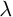

Material::Herzberger class reference
[Core module]
Declaration
#include <Goptical/Material/Herzberger>
namespace Goptical {
namespace Material {
class Herzberger;
};
};
This class is a member of the Material namespace.
Inheritance
Description
This class models optical properties of dielectric materials with Herzberger refractive index dispersion formula:
+ \frac{E}{\lambda^2-0.028} + \frac{F}{\left(\lambda^2-0.028\right)^2}" />
with  the micrometer wavelength.
Members
See also the full member list section for this class.
Inherited members
- 36 members inherited from Dielectric
Functions
- Herzberger()
- Herzberger(double A, double B, double C, double D, double E, double F)
- virtual double get_measurement_index(double wavelen) const
- void set_coefficients(double A, double B, double C, double D, double E, double F)
Members detail
Create an empty herzberger model
Create an herzberger model with given coefficients
This virtual function implements the get_measurement_index pure function declared in the Dielectric base abstract class.
Documentation inherited from base class:
Get material relative refractive index in measurment medium at specified wavelen in nm.
Change herzberger constant term